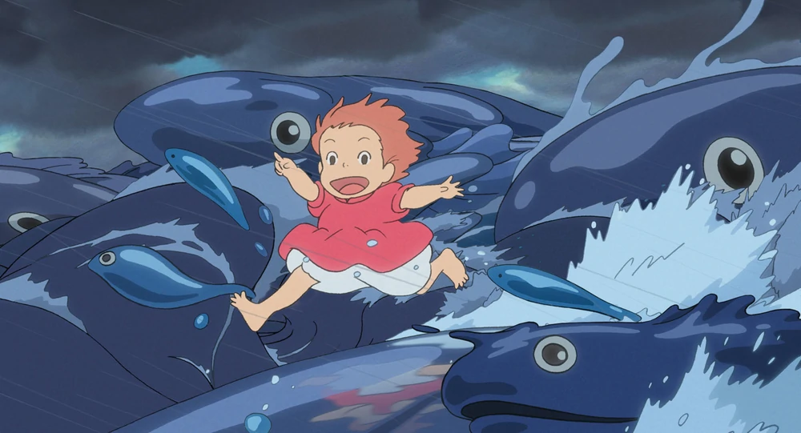
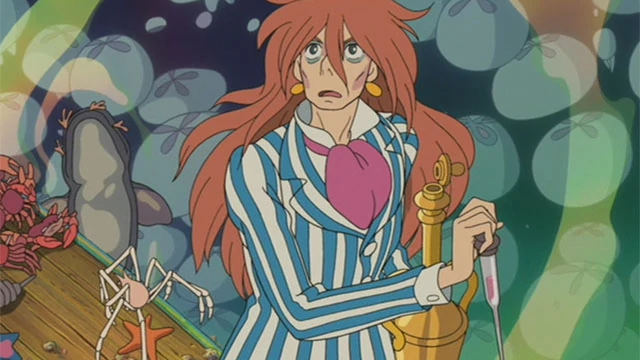

Ponyo's World
Ponyo is an animated film produced by Studio Ghibli
Ponyo is an animated film produced by Studio Ghibli (FOR EXERCISE)
My Favorite Characters
- Ponyo: The protagonist who happens to be half goldfish half chicken and sometimes human
- Sôsuke *: My favorite character. Sôsuke is a carefree and honest young boy who loves the sea, and forms a
strong
bond with Ponyo after rescuing her from inside a jar.
- Fujimoto: Fujimoto is Ponyo's father. He's a bad guy and a good guy, but not really either of them.


